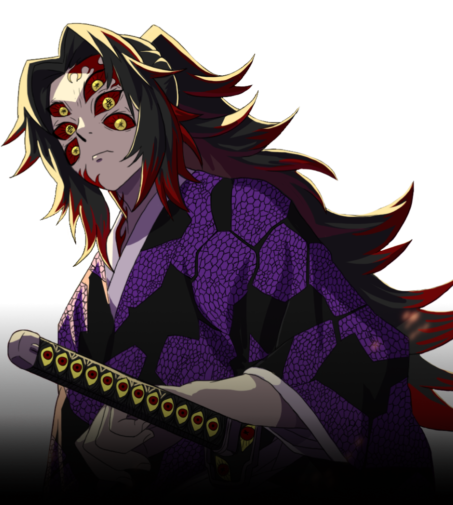
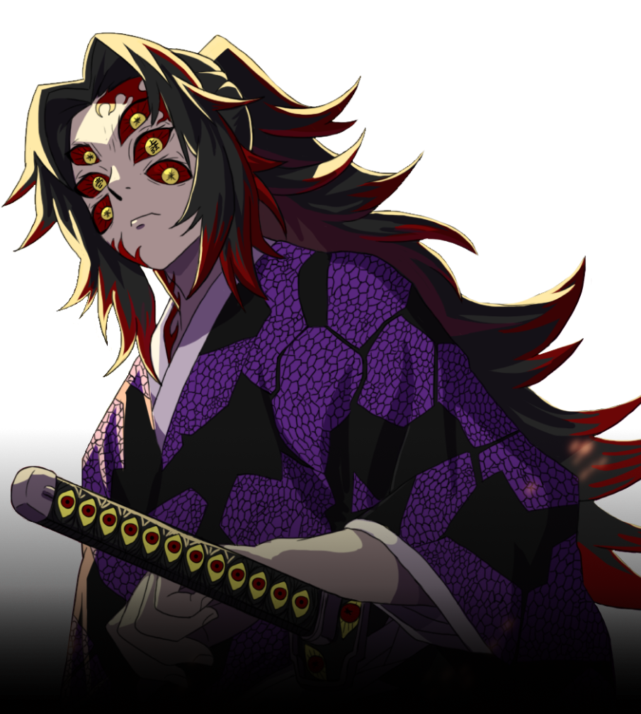

Kokushibo is a major supporting antagonist of Demon Slayer: Kimetsu no Yaiba. He is a demon affiliated with the Twelve Kizuki, holding the highest position, Upper Rank One.
Nearly five centuries ago during the Sengoku Era, Kokushibo was a human by the name of Michikatsu Tsugikuni a former Demon Slayer and the older twin brother of Yoriichi Tsugikuni, the strongest Demon Slayer that ever existed.
Kokushibo is also the ancestor of Muichiro Tokito and Yuichiro Tokito and the one responsible for turning Zenitsu Agatsuma's senior, Kaigaku, into a demon and joining the Twelve Kizuki. Kokushibo is a tall man with a muscular build and a pale skin complexion.
 
